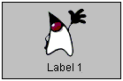
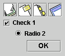

Laboratory 04
GUIs, Panels, as well as Mouse and Key Listeners
Section
Presentation by Hector,Antonio and Jose
Follow the instructions below only to stop when instructed to:
JPanel
- These are lightweight Java component that allow programmers to create platform independent User Interfaces.
- All Swing GUI applications and applets make use of a containment hierarchy that is more or less unrelated to (or at least different from) the Swing components' position on the class hierarchy.
- A panel, or pane, such as JPanel, is an intermediate container. Its only purpose is to simplify the positioning atomic components like buttons and labels. Other intermediate Swing containers, such as scroll panes (JScrollPane) and tabbed panes (JTabbedPane), typically play a more visible, interactive role in a program's GUI.
- Tip: To view the containment hierarchy for any frame or dialog, click its border to select it, and then press Control-Shift-F1. A list of the containment hierarchy will be written to the standard output stream.
Containment hierarchy Explained
-
Top-level Container(s): To appear onscreen, every GUI component must be part of a containment hierarchy. There is at least one containment hierarchy in every program that uses Swing components. Each containment hierarchy has a top-level container at its root.

- Intermediate Container(s):Generally speaking, an intermediate container consists of a content pane, or panel, that contains all the visible (atomic) components. Each top-level container must contain at least one intermediate container if there is to be anything useful displayed on the screen.
Containment hierarchy Explained
Atomic Component(s):The button and label are atomic components - self-sufficient entities that present bits of information to the user. Often, atomic components also get input from the user.
- 
- 
BorderLayout

As the preceding picture shows, a BorderLayout object has five areas. These areas are specified by the BorderLayout constants:
- PAGE_START
- PAGE_END
- LINE_START
- LINE_END
- CENTER
Continues below(Down arrow)
BorderLayout
If the window is enlarged, the center area gets as much of the available space as possible. The other areas expand only as much as necessary to fill all available space. Often a container uses only one or two of the areas of the BorderLayout object — just the center, or the center and the bottom.
BorderLayout
JButton button = new JButton("Button 1 (PAGE_START)");
pane.add(button, BorderLayout.PAGE_START);
//Make the center component big, since that's the
//typical usage of BorderLayout.
button = new JButton("Button 2 (CENTER)");
button.setPreferredSize(new Dimension(200, 100)); // Make sure it wont collapse
pane.add(button, BorderLayout.CENTER);
button = new JButton("Button 3 (LINE_START)");
pane.add(button, BorderLayout.LINE_START);
button = new JButton("Long-Named Button 4 (PAGE_END)");
pane.add(button, BorderLayout.PAGE_END);
button = new JButton("5 (LINE_END)");
pane.add(button, BorderLayout.LINE_END);
BoxLayout

The Swing packages include a general purpose layout manager named BoxLayout. BoxLayout either stacks its components on top of each other or places them in a row — your choice. You might think of it as a version of FlowLayout, but with greater functionality.
BoxLayout
pane.setLayout(new BoxLayout(pane, BoxLayout.Y_AXIS));
addAButton("Button 1", pane);
addAButton("Button 2", pane);
addAButton("Button 3", pane);
addAButton("Long-Named Button 4", pane);
addAButton("5", pane);;
GridLayout

A GridLayout object places components in a grid of cells. Each component takes all the available space within its cell, and each cell is exactly the same size. If the GridLayoutDemo window is resized, the GridLayout object changes the cell size so that the cells are as large as possible, given the space available to the container.(See code below, down arrow)
GridLayout
GridLayout experimentLayout = new GridLayout(0,2);
...
compsToExperiment.setLayout(experimentLayout);
compsToExperiment.add(new JButton("Button 1"));
compsToExperiment.add(new JButton("Button 2"));
compsToExperiment.add(new JButton("Button 3"));
compsToExperiment.add(new JButton("Long-Named Button 4"));
compsToExperiment.add(new JButton("5"));